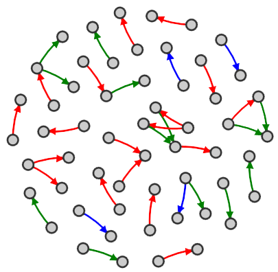

I'm a PhD Candidate at the University of Leeds in the Department of Applied Mathematics. I'm interested in Python and it's uses within academia as well as utilising open data sources. When I'm not working I can usually be found on my bike.
Research Interests
- Networks
- Dynamical Processes on Complex Networks
- Stochastic Simulation
- Social Network Analysis
- Machine Learning
- Visualisation
Education
University of Leeds PhD Candidate (2014-Present) EPSRC CASE Studentship with Bloom Agency
University of Oxford Mathematics MMath (2009-2014)
Employment
Winton Capital Management Assistant Researcher (June - September 2014)
Coutts Finance Intern (June - September 2013)
Further information can be found on my LinkedIn profile